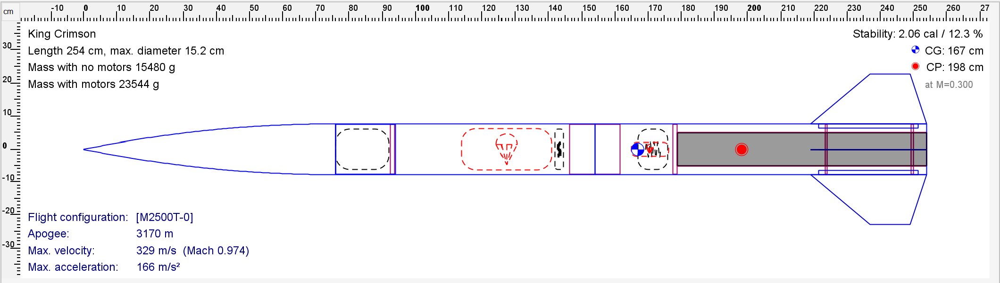

2027 IREC · 10K COTS
King Crimson
King Crimson is HUAC’s first IREC entry: a single-stage, commercial off-the-shelf (COTS) rocket designed for a 10,000-foot competition flight using an AeroTech M2500T motor.
The team has completed 25 launches to date, including 19 low-power and six high-power flights. This category builds on that experience while bringing together vehicle integration, recovery, payload testing, and competition operations.
